library(ggplot2)
library(dplyr)
library(tidyr)
library(viridis)
library(ggrepel)
library(forcats)
library(RColorBrewer)
library(scales)
library(ggridges)
library(patchwork)nba_data <- read.csv("nba_data_processed.csv")nba_palette <- c("#003399", "#E31837", "#007A33", "#552583", "#CE1141",
"#98002E", "#00538C", "#0E2240", "#C8102E", "#1D1160",
"#6F2DA8", "#00A4BD", "#FF7F00", "#B10DC9", "#FF851B",
"#39CCCC", "#01FF70", "#85144b", "#F012BE", "#3D9970")ggplot(nba_data, aes(x = MP, y = PTS, color = Pos)) +
geom_point(alpha = 0.7) +
geom_smooth(method = "lm", se = FALSE, color = "black") +
scale_color_manual(values = nba_palette) +
labs(title = "Relationship Between Minutes Played and Points Scored",
subtitle = "By Position",
x = "Minutes Played",
y = "Total Points",
color = "Position") +
theme_minimal() +
theme(plot.title = element_text(face = "bold"),
legend.position = "bottom")## `geom_smooth()` using formula = 'y ~ x'## Warning: Removed 26 rows containing non-finite outside the scale range
## (`stat_smooth()`).## Warning: Removed 26 rows containing missing values or values outside the scale
## range (`geom_point()`).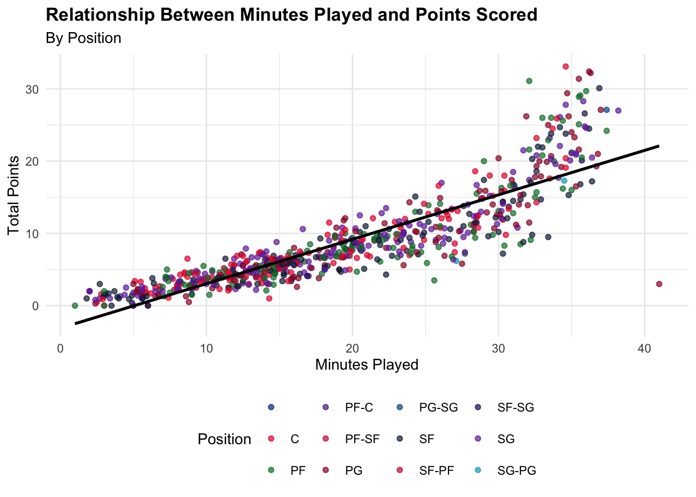
ggplot(nba_data, aes(x = Pos, y = "FG%", fill = Pos)) +
geom_violin(trim = FALSE, alpha = 0.7) +
geom_boxplot(width = 0.1, alpha = 0.5) +
scale_fill_manual(values = nba_palette) +
labs(title = "Field Goal Percentage Distribution by Position",
x = "Position",
y = "Field Goal Percentage",
fill = "Position") +
theme_minimal() +
theme(plot.title = element_text(face = "bold"),
legend.position = "none")## Warning: Groups with fewer than two datapoints have been dropped.
## ℹ Set `drop = FALSE` to consider such groups for position adjustment purposes.
## Groups with fewer than two datapoints have been dropped.
## ℹ Set `drop = FALSE` to consider such groups for position adjustment purposes.
## Groups with fewer than two datapoints have been dropped.
## ℹ Set `drop = FALSE` to consider such groups for position adjustment purposes.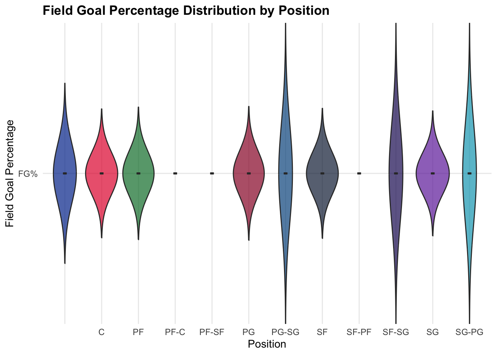
nba_data$score_rank <- rank(-nba_data$PTS)
nba_top_scorers <- nba_data[nba_data$score_rank <= 20, ]
nba_top_scorers <- nba_top_scorers[order(-nba_top_scorers$PTS), ]
ggplot(nba_top_scorers, aes(x = reorder(Player, PTS), y = PTS, fill = Tm)) +
geom_bar(stat = "identity") +
coord_flip() +
scale_fill_manual(values = nba_palette) +
labs(title = "Top 20 NBA Scorers",
x = "Player",
y = "Total Points",
fill = "Team") +
theme_minimal() +
theme(plot.title = element_text(face = "bold"),
legend.position = "bottom")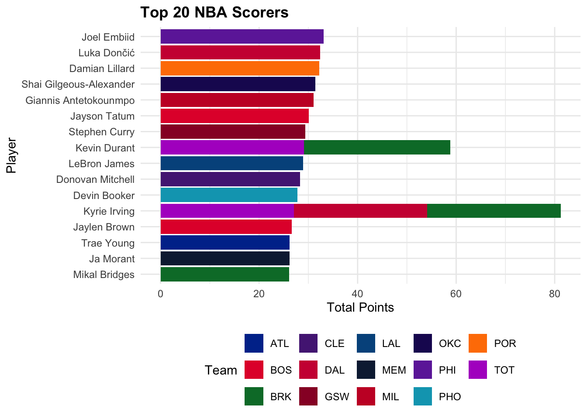
ggplot(nba_data, aes(x = Age)) +
geom_density(fill = "#1D428A", alpha = 0.7) +
geom_vline(aes(xintercept = mean(Age)), color = "#FFC72C", linetype = "dashed", size = 1) +
annotate("text", x = mean(nba_data$Age) + 3, y = 0.1,
label = paste("Mean Age:", round(mean(nba_data$Age), 1)), color = "#FFC72C") +
labs(title = "Age Distribution of NBA Players",
subtitle = "With Mean Age Marker",
x = "Age",
y = "Density") +
theme_minimal() +
theme(plot.title = element_text(face = "bold"))## Warning: Removed 26 rows containing non-finite outside the scale range
## (`stat_density()`).## Warning: Removed 705 rows containing missing values or values outside the scale
## range (`geom_vline()`).## Warning: Removed 1 row containing missing values or values outside the scale
## range (`geom_text()`).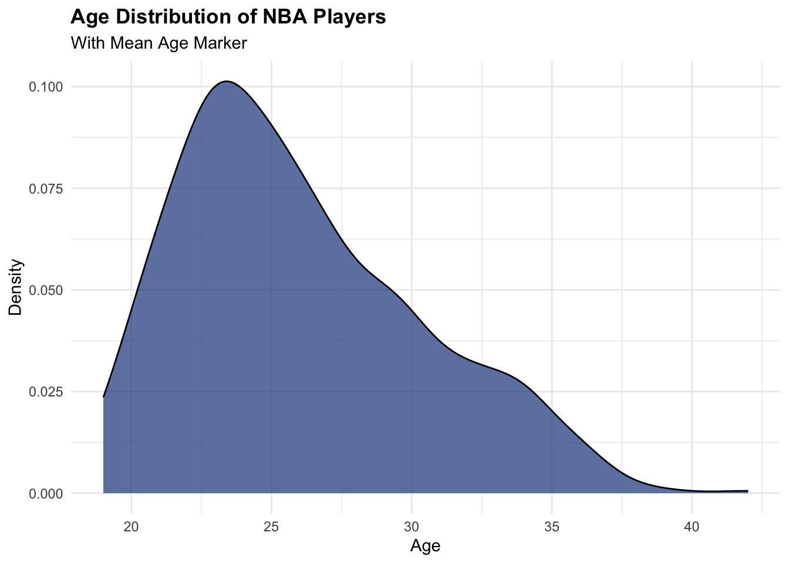
ggplot(nba_data, aes(x = AST, y = TOV, size = MP, color = Pos)) +
geom_point(alpha = 0.7) +
scale_size_continuous(range = c(1, 10)) +
scale_color_manual(values = nba_palette) +
labs(title = "Relationship Between Assists and Turnovers",
subtitle = "Size Represents Minutes Played",
x = "Assists",
y = "Turnovers",
size = "Minutes Played",
color = "Position") +
theme_minimal() +
theme(plot.title = element_text(face = "bold"),
legend.position = "right")## Warning: Removed 26 rows containing missing values or values outside the scale
## range (`geom_point()`).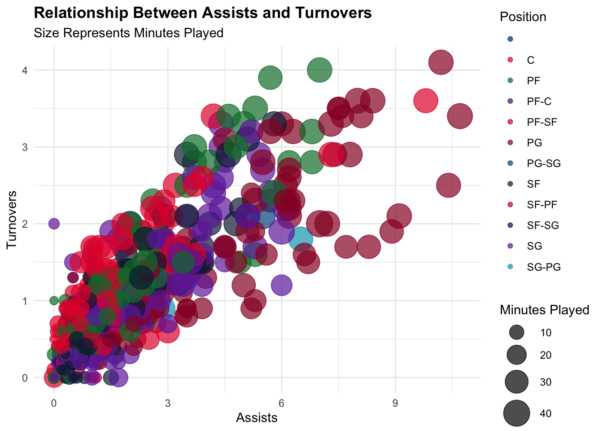
nba_data$FT_Rate <- nba_data$FTA / (nba_data$FGA + 0.001)
ft_rate_95pct <- quantile(nba_data$FT_Rate, 0.95, na.rm = TRUE)
plot_data <- nba_data[nba_data$FT_Rate <= ft_rate_95pct, ]
ggplot(plot_data, aes(x = Pos, y = FT_Rate, fill = Pos)) +
geom_violin(trim = FALSE, alpha = 0.7) +
geom_boxplot(width = 0.1, alpha = 0.5) +
scale_fill_manual(values = nba_palette) +
labs(title = "Free Throw Rate by Position",
subtitle = "Free Throw Attempts per Field Goal Attempt",
x = "Position",
y = "Free Throw Rate (FTA/FGA)",
fill = "Position") +
theme_minimal() +
theme(plot.title = element_text(face = "bold"),
legend.position = "none")## Warning: Removed 26 rows containing non-finite outside the scale range
## (`stat_ydensity()`).## Warning: Groups with fewer than two datapoints have been dropped.
## ℹ Set `drop = FALSE` to consider such groups for position adjustment purposes.
## Groups with fewer than two datapoints have been dropped.
## ℹ Set `drop = FALSE` to consider such groups for position adjustment purposes.
## Groups with fewer than two datapoints have been dropped.
## ℹ Set `drop = FALSE` to consider such groups for position adjustment purposes.## Warning: Removed 26 rows containing non-finite outside the scale range
## (`stat_boxplot()`).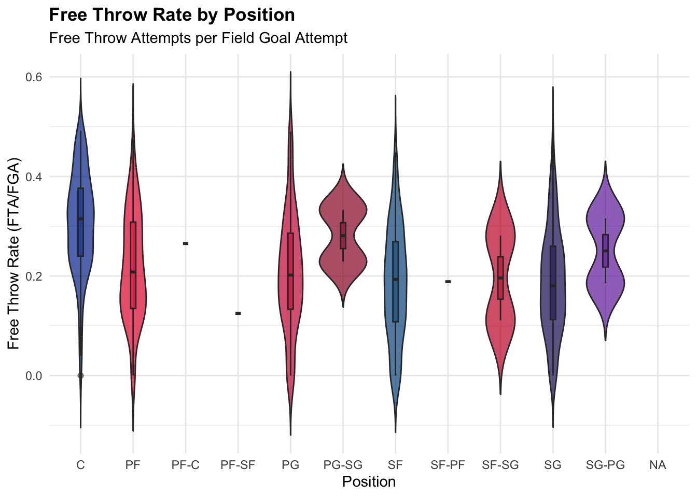
top_indices <- order(nba_data$PTS, decreasing = TRUE)[1:5]
top_5_players <- nba_data[top_indices, ]
player_names <- top_5_players$Player
stats_cols <- c("PTS", "AST", "TRB", "STL", "BLK")
top_5_stats <- top_5_players[, stats_cols]
normalized_stats <- matrix(0, nrow = 5, ncol = 5)
colnames(normalized_stats) <- stats_cols
rownames(normalized_stats) <- player_names
for (i in 1:5) {
stat_col <- stats_cols[i]
min_val <- min(top_5_stats[, stat_col])
max_val <- max(top_5_stats[, stat_col])
normalized_stats[, i] <- (top_5_stats[, stat_col] - min_val) / (max_val - min_val)
}
radar_data <- data.frame(
Player = rep(player_names, each = 5),
Stat = rep(stats_cols, times = 5),
Value = as.vector(t(normalized_stats))
)
ggplot(radar_data, aes(x = Stat, y = Value, group = Player, color = Player)) +
geom_polygon(fill = NA, size = 1) +
geom_point(size = 3) +
coord_polar() +
scale_color_manual(values = nba_palette[1:5]) +
labs(title = "Performance Comparison of Top 5 Scorers",
x = "",
y = "Normalized Value",
color = "Player") +
theme_minimal() +
theme(plot.title = element_text(face = "bold"),
axis.text.y = element_blank(),
axis.ticks = element_blank(),
panel.grid.major = element_line(color = "gray80", size = 0.2))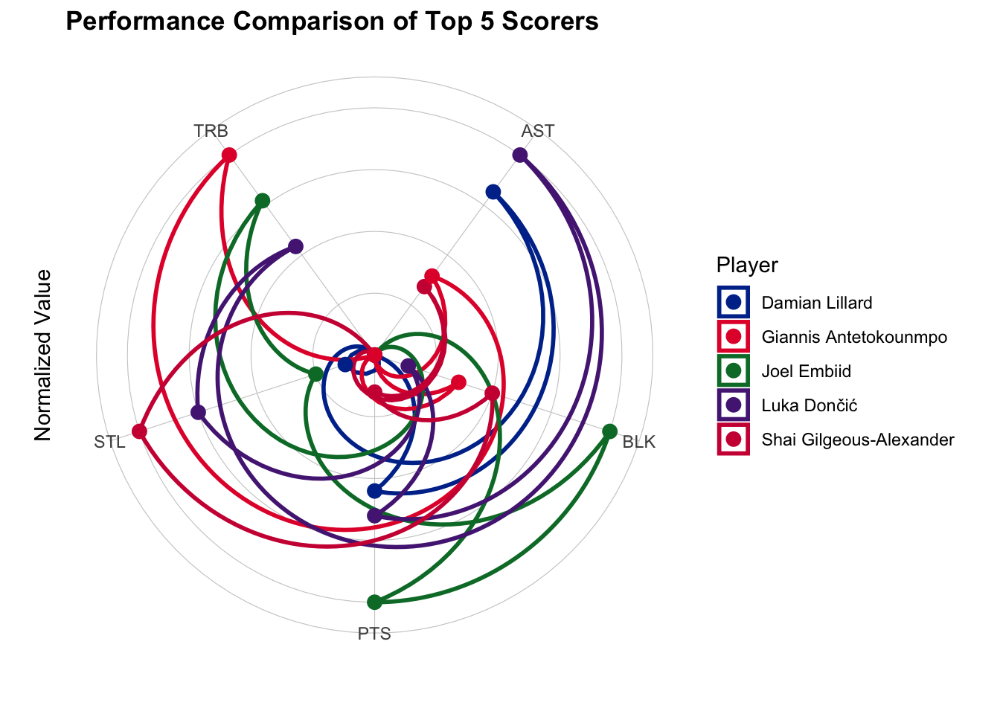
corr_vars <- c("PTS", "AST", "TRB", "STL", "BLK", "TOV", "PF", "MP")
corr_data <- nba_data[, corr_vars]
corr_matrix <- cor(corr_data, use = "pairwise.complete.obs")
corr_df <- as.data.frame(as.table(corr_matrix))
names(corr_df) <- c("Var1", "Var2", "Correlation")
ggplot(corr_df, aes(x = Var1, y = Var2, fill = Correlation)) +
geom_tile() +
scale_fill_gradient2(low = "#CE1141", mid = "white", high = "#007A33", midpoint = 0) +
geom_text(aes(label = round(Correlation, 2)), size = 2.5) +
labs(title = "Correlation Heatmap of Key NBA Statistics",
x = "",
y = "",
fill = "Correlation") +
theme_minimal() +
theme(plot.title = element_text(face = "bold"),
axis.text.x = element_text(angle = 45, hjust = 1),
legend.position = "bottom")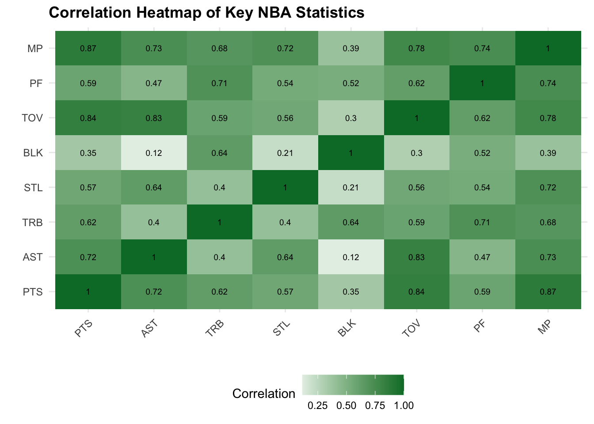
ggplot(nba_data, aes(x = Age, y = Pos, fill = Pos)) +
geom_density_ridges(alpha = 0.7) +
scale_fill_manual(values = nba_palette) +
labs(title = "Age Distribution by Position",
x = "Age",
y = "Position",
fill = "Position") +
theme_minimal() +
theme(plot.title = element_text(face = "bold"),
legend.position = "none")## Picking joint bandwidth of 1.33## Warning: Removed 26 rows containing non-finite outside the scale range
## (`stat_density_ridges()`).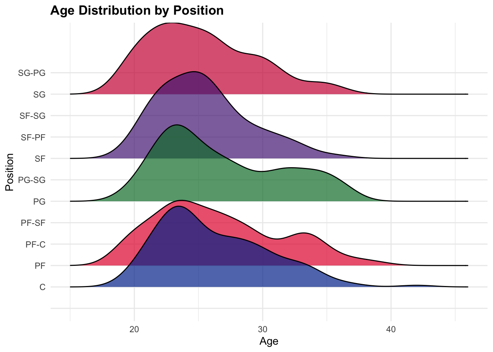
ggplot(nba_data, aes(x = TRB, y = AST, size = PTS, color = Pos)) +
geom_point(alpha = 0.6) +
scale_size_continuous(range = c(1, 15)) +
scale_color_manual(values = nba_palette) +
labs(title = "Points, Rebounds, and Assists by Position",
x = "Total Rebounds",
y = "Assists",
size = "Points",
color = "Position") +
theme_minimal() +
theme(plot.title = element_text(face = "bold"),
legend.position = "right")## Warning: Removed 26 rows containing missing values or values outside the scale
## range (`geom_point()`).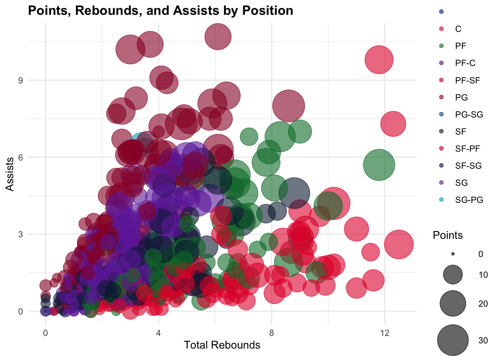
positions <- unique(nba_data$Pos)
orb_by_pos <- numeric(length(positions))
drb_by_pos <- numeric(length(positions))
for (i in 1:length(positions)) {
pos <- positions[i]
pos_data <- nba_data[nba_data$Pos == pos, ]
orb_by_pos[i] <- sum(pos_data$ORB, na.rm = TRUE)
drb_by_pos[i] <- sum(pos_data$DRB, na.rm = TRUE)
}
rebound_summary <- data.frame(
Position = rep(positions, 2),
Rebound_Type = c(rep("ORB", length(positions)), rep("DRB", length(positions))),
Count = c(orb_by_pos, drb_by_pos)
)
rebound_summary$Position <- factor(rebound_summary$Position, levels = positions)
rebound_summary$Rebound_Type <- factor(rebound_summary$Rebound_Type, levels = c("ORB", "DRB"))
ggplot(rebound_summary, aes(x = Position, y = Count, fill = Rebound_Type)) +
geom_bar(stat = "identity", position = "stack") +
scale_fill_manual(values = c("ORB" = "#CE1141", "DRB" = "#007A33"),
labels = c("ORB" = "Offensive Rebounds", "DRB" = "Defensive Rebounds")) +
labs(title = "Offensive vs Defensive Rebounds by Position",
x = "Position",
y = "Total Rebounds",
fill = "Rebound Type") +
theme_minimal() +
theme(plot.title = element_text(face = "bold"),
legend.position = "bottom")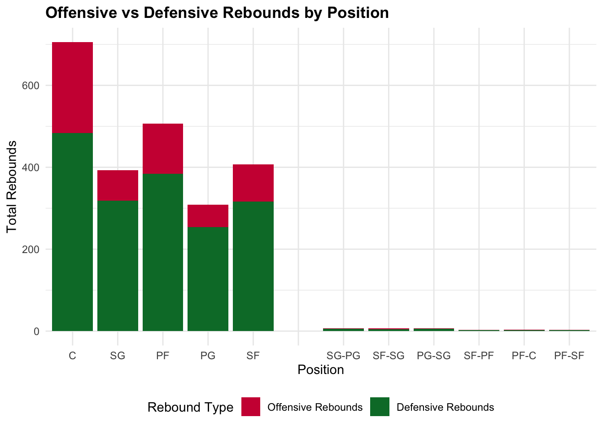
ggplot(nba_data, aes(x = FGA, y = PTS)) +
geom_hex(bins = 30) +
scale_fill_viridis_c() +
labs(title = "Relationship Between Field Goal Attempts and Points",
subtitle = "Using Hexagonal Binning",
x = "Field Goal Attempts",
y = "Total Points",
fill = "Count") +
theme_minimal() +
theme(plot.title = element_text(face = "bold"),
legend.position = "right")## Warning: Removed 26 rows containing non-finite outside the scale range
## (`stat_binhex()`).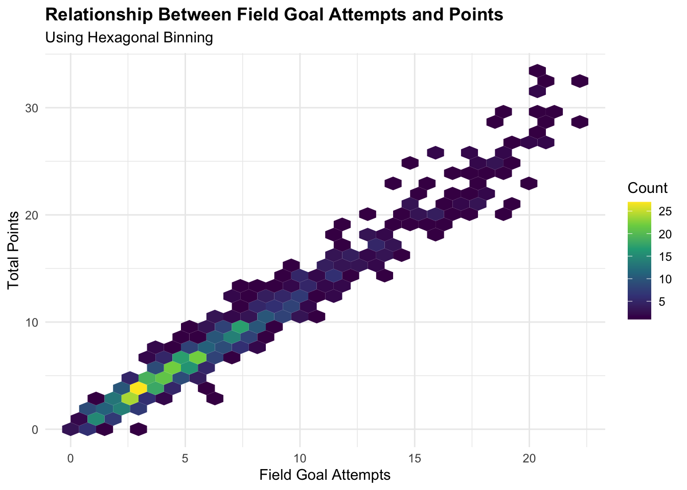
ggplot(nba_data, aes(x = "FG%", y = PTS, color = Pos)) +
geom_point(alpha = 0.7) +
scale_color_manual(values = nba_palette) +
labs(title = "Field Goal Percentage vs Points Scored",
x = "Field Goal Percentage",
y = "Total Points",
color = "Position") +
theme_minimal() +
theme(plot.title = element_text(face = "bold"),
legend.position = "right")## Warning: Removed 26 rows containing missing values or values outside the scale
## range (`geom_point()`).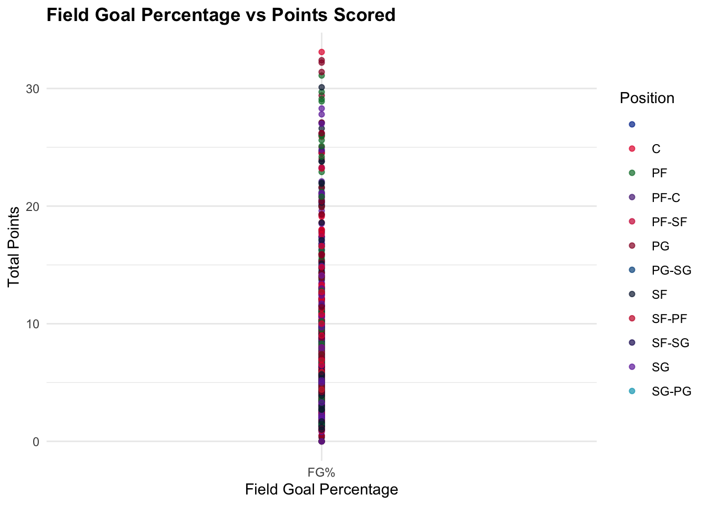
ggplot(nba_data, aes(x = Age, y = MP, size = G, color = Pos)) +
geom_point(alpha = 0.7) +
scale_color_manual(values = nba_palette) +
scale_size_continuous(range = c(1, 10)) +
labs(title = "Minutes Played vs Age",
subtitle = "Size Represents Games Played",
x = "Age",
y = "Minutes Played",
size = "Games Played",
color = "Position") +
theme_minimal() +
theme(plot.title = element_text(face = "bold"),
legend.position = "right")## Warning: Removed 26 rows containing missing values or values outside the scale
## range (`geom_point()`).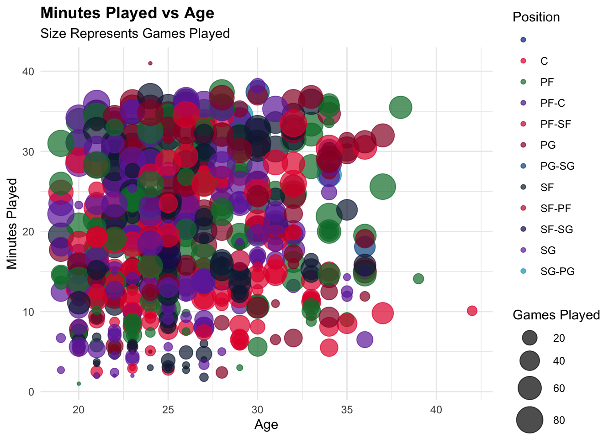
library(ggridges)
ggplot(nba_data, aes(x = PTS, y = Pos, fill = Pos)) +
geom_density_ridges(alpha = 0.7, scale = 1.5, rel_min_height = 0.01) +
scale_fill_manual(values = nba_palette) +
labs(title = "Distribution of Points Scored by Position",
subtitle = "Using ridgeline plots for direct comparison",
x = "Total Points",
y = "") +
theme_minimal() +
theme(plot.title = element_text(face = "bold"),
legend.position = "none",
panel.grid.major.y = element_blank())## Picking joint bandwidth of 2.96## Warning: Removed 26 rows containing non-finite outside the scale range
## (`stat_density_ridges()`).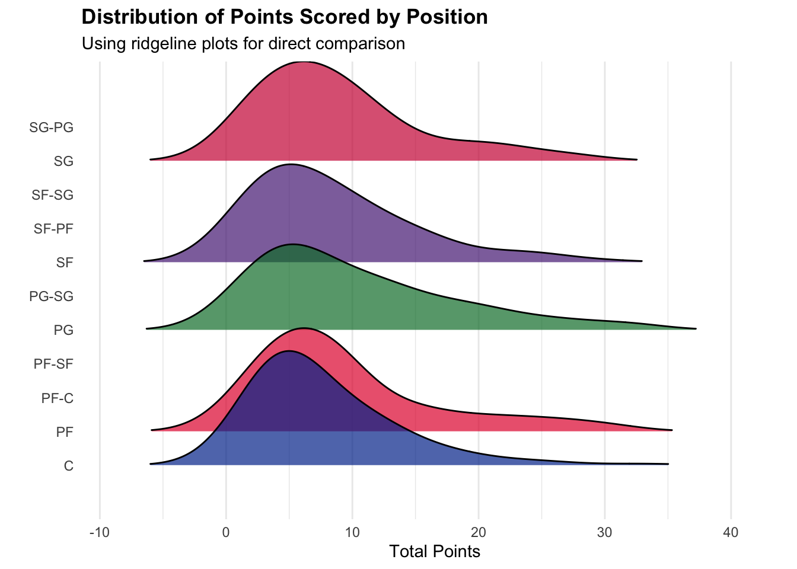
ggplot(nba_data, aes(x = STL, y = BLK, color = Pos, size = AST)) +
geom_point(alpha = 0.7) +
scale_color_manual(values = nba_palette) +
scale_size_continuous(range = c(1, 10)) +
labs(title = "Defensive Metrics: Steals vs Blocks",
subtitle = "Size Represents Assists (Offensive Contribution)",
x = "Steals",
y = "Blocks",
color = "Position",
size = "Assists") +
theme_minimal() +
theme(plot.title = element_text(face = "bold"),
legend.position = "right")## Warning: Removed 26 rows containing missing values or values outside the scale
## range (`geom_point()`).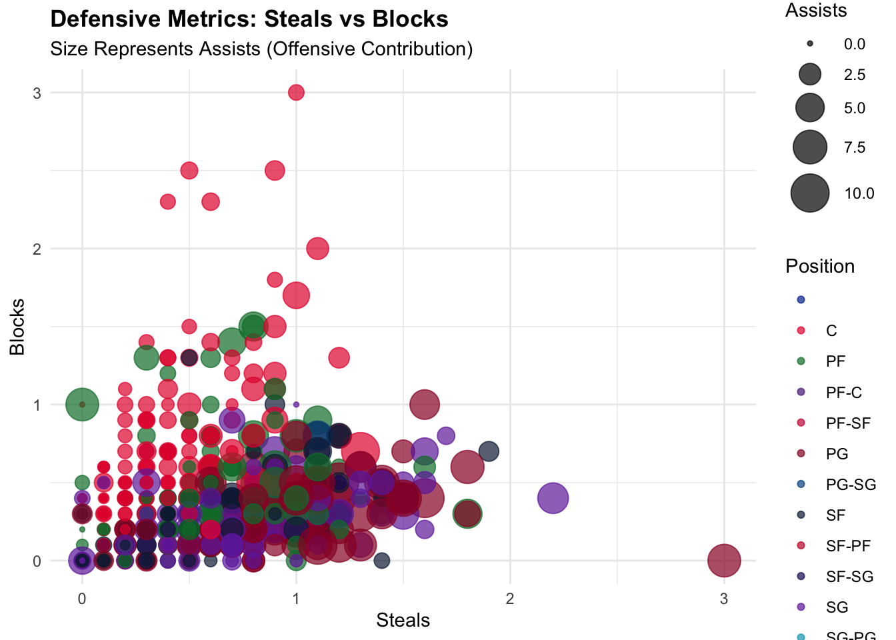
ggplot(nba_data, aes(x = '3PA', y = 'FG%', size = PTS, color = Pos)) +
geom_point(alpha = 0.6) +
scale_color_manual(values = nba_palette) +
scale_size_continuous(range = c(1, 15)) +
labs(title = "3-Point Attempts vs Field Goal Percentage",
subtitle = "Size Represents Total Points",
x = "3-Point Attempts",
y = "Field Goal Percentage",
color = "Position",
size = "Points") +
theme_minimal() +
theme(plot.title = element_text(face = "bold"),
legend.position = "right")## Warning: Removed 26 rows containing missing values or values outside the scale
## range (`geom_point()`).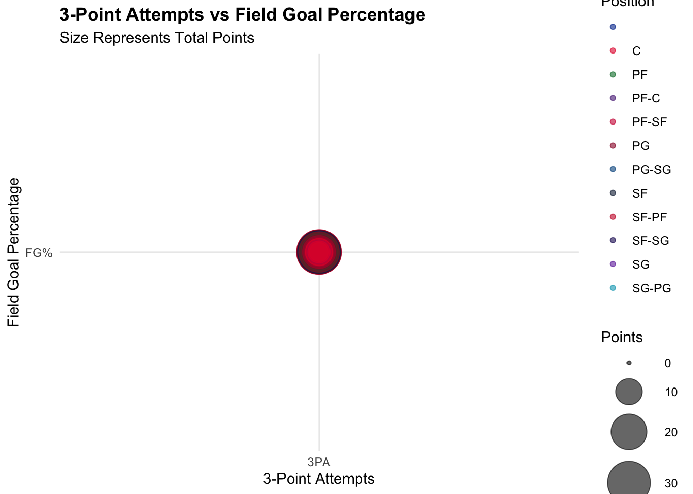
ggplot(nba_data, aes(x = FGA, y = FTA, color = Pos)) +
geom_point(alpha = 0.7) +
geom_smooth(method = "lm", se = FALSE, color = "black") +
scale_color_manual(values = nba_palette) +
labs(title = "Relationship Between Free Throw Attempts and Field Goal Attempts",
subtitle = "By Position",
x = "Field Goal Attempts",
y = "Free Throw Attempts",
color = "Position") +
theme_minimal() +
theme(plot.title = element_text(face = "bold"),
legend.position = "bottom")## `geom_smooth()` using formula = 'y ~ x'## Warning: Removed 26 rows containing non-finite outside the scale range
## (`stat_smooth()`).## Warning: Removed 26 rows containing missing values or values outside the scale
## range (`geom_point()`).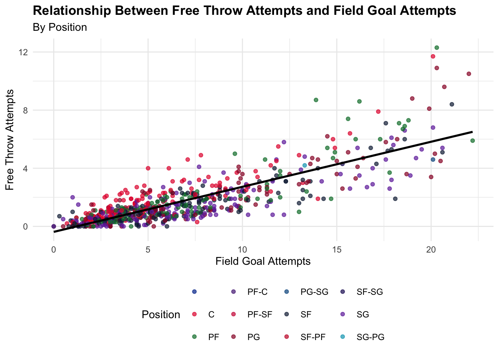
nba_data$MPG <- nba_data$MP / nba_data$G
ggplot(nba_data, aes(x = Pos, y = MPG, fill = Pos)) +
geom_violin(trim = FALSE, alpha = 0.7) +
geom_boxplot(width = 0.1, alpha = 0.5) +
scale_fill_manual(values = nba_palette) +
labs(title = "Minutes Played per Game by Position",
x = "Position",
y = "Minutes per Game",
fill = "Position") +
theme_minimal() +
theme(plot.title = element_text(face = "bold"),
legend.position = "none")## Warning: Removed 26 rows containing non-finite outside the scale range
## (`stat_ydensity()`).## Warning: Groups with fewer than two datapoints have been dropped.
## ℹ Set `drop = FALSE` to consider such groups for position adjustment purposes.
## Groups with fewer than two datapoints have been dropped.
## ℹ Set `drop = FALSE` to consider such groups for position adjustment purposes.
## Groups with fewer than two datapoints have been dropped.
## ℹ Set `drop = FALSE` to consider such groups for position adjustment purposes.## Warning: Removed 26 rows containing non-finite outside the scale range
## (`stat_boxplot()`).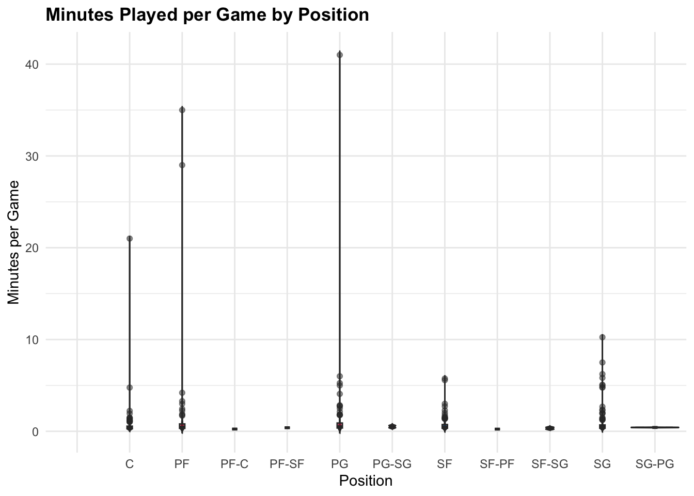
top_indices <- order(nba_data$PTS, decreasing = TRUE)[1:10]
top_10_players <- nba_data[top_indices, ]
plot_data <- top_10_players[, c("Player", "PTS", "AST", "TRB", "STL", "BLK")]
library(GGally)
player_colors <- setNames(nba_palette[1:10], plot_data$Player)
ggparcoord(plot_data,
columns = 2:6,
groupColumn = "Player",
scale = "uniminmax",
alphaLines = 0.8,
showPoints = TRUE) +
scale_color_manual(values = player_colors) +
labs(title = "Parallel Coordinate Plot of Top 10 Players",
x = "Statistic",
y = "Scaled Value") +
theme_minimal() +
theme(plot.title = element_text(face = "bold"),
legend.position = "bottom")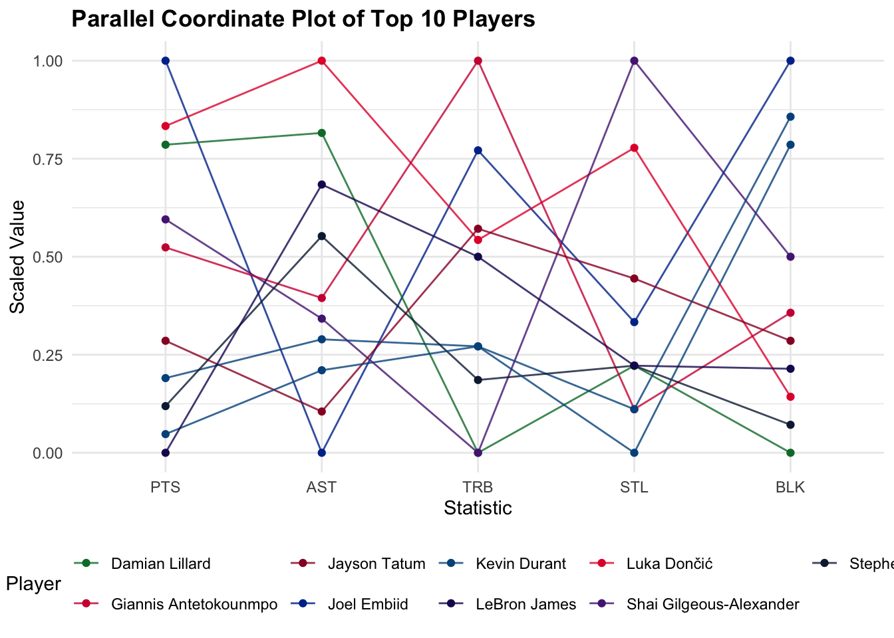